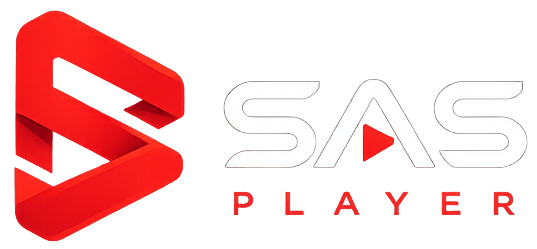
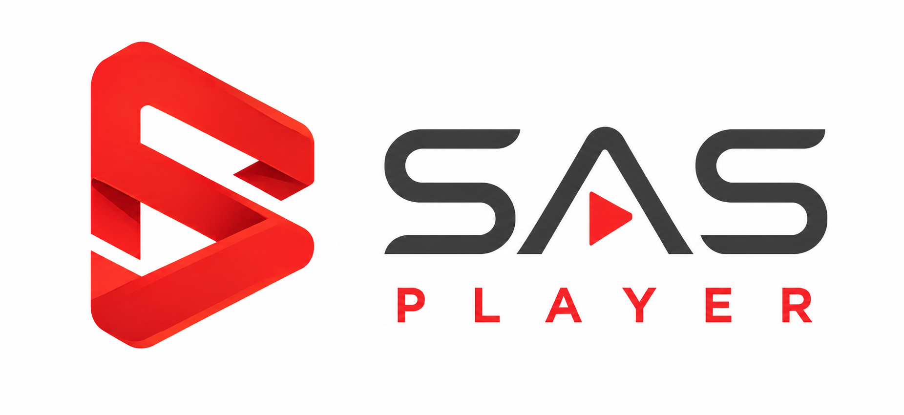

Enter your device name or identifier so Super Admin can grant you play/pause access:
Super Admin has temporarily taken back playback & remote controls for this device.
Approve or revoke devices that are allowed to remotely play, pause, change tracks, or add links to this playlist.
Current Cloudflare Worker endpoint for Realtime WebSockets & Auth:
Leave empty to auto-detect: http://localhost:8787 when running locally or the default production worker.
http://localhost:8787